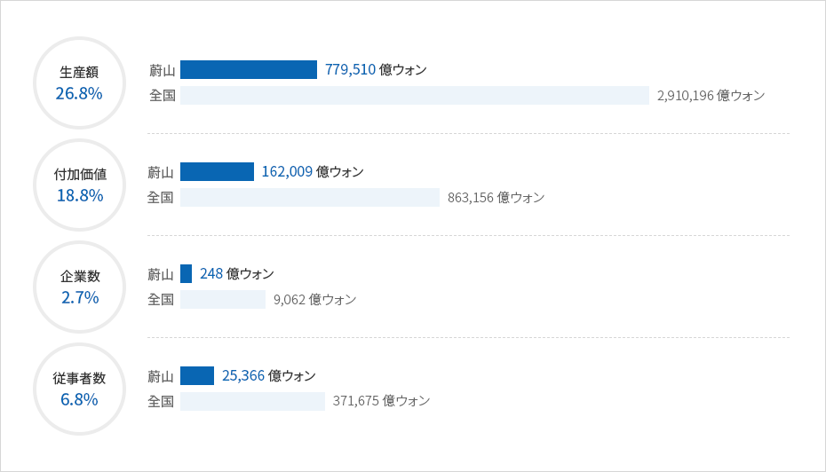
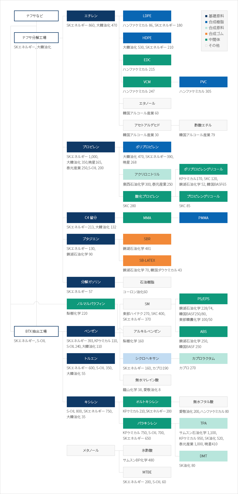

化学産業
- Home
- 主要産業
- 化学産業
化学産業
韓国は世界5位の石油化学生産国であり、中でも蔚山は韓国の石油化学生産量の約35%を占め、2016年には248社の企業が78兆ウォンを生産しました。これは、蔚山の3大主力産業中で最大規模であり、2016年198億ドルを輸出し、化学分野における全国シェアは31.6％を占めています。
アジア最大の化学産業団地を保有する蔚山は、単一工場の規模では世界トップのSKエネルギーの建設をはじめ、団地規模は2,400万平方メートルに上り、世界屈指の石油化学企業であるSKエネルギー、S-OIL、ソルベイ、イーストマン、ローディア、bp、Mobil、デュポンなどが蔚山で活発な生産活動を行っています。
また、蔚山精密化学センター、韓国化学研究院の蔚山新科学実用化センター、バイオ化学実用化センターなど国策研究所や専門研究団地を構築し、バイオ化学、精密化学、ナノ化学など新産業の育成を通じて2030年先端化学分野においてアジア最高の都市としてのビジョンを実現していく計画です。
蔚山の石油化学産業の現状(2012年)


생산액(26.8%) - 울산(779,510억원), 전국(2,910,196억원)
부가가치(18.8%) - 울산(162,009억원), 전국(863,156억원)
사업체수(2.7%) - 울산(248억원), 전국(9,062억원)
종사자수(6.8%) - 울산(25,366억원), 전국(371,675억원)

蔚山の会社別主要石油化学生産製品
(単位：千トン/年)

내용필요